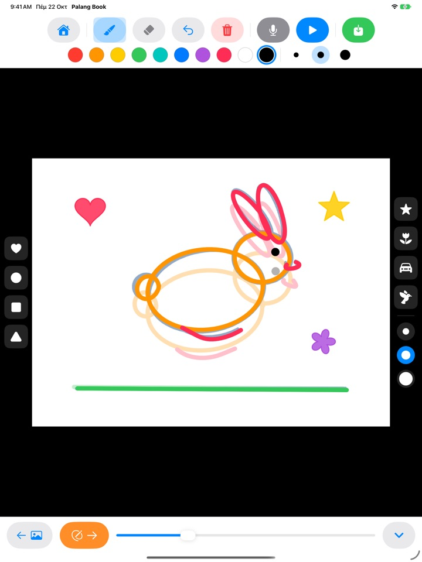
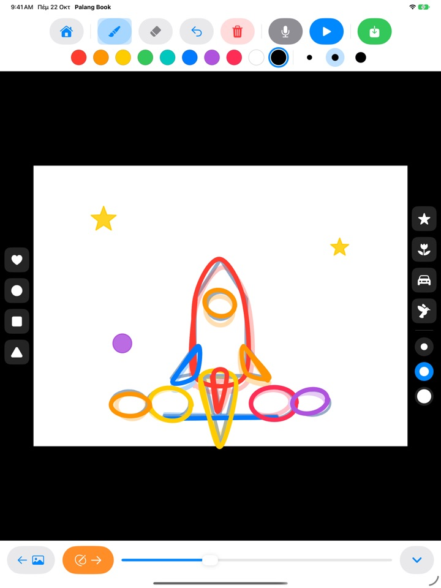
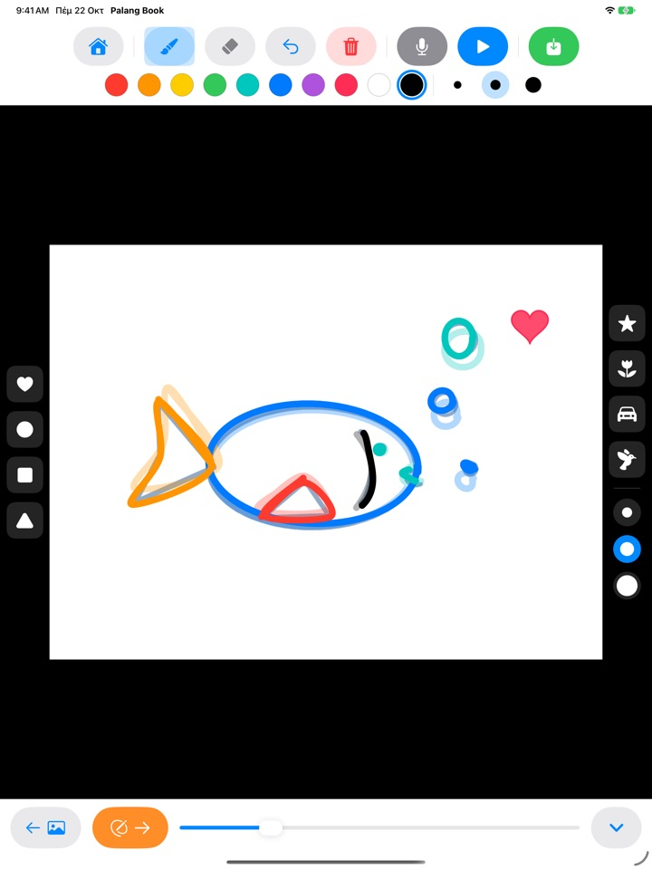
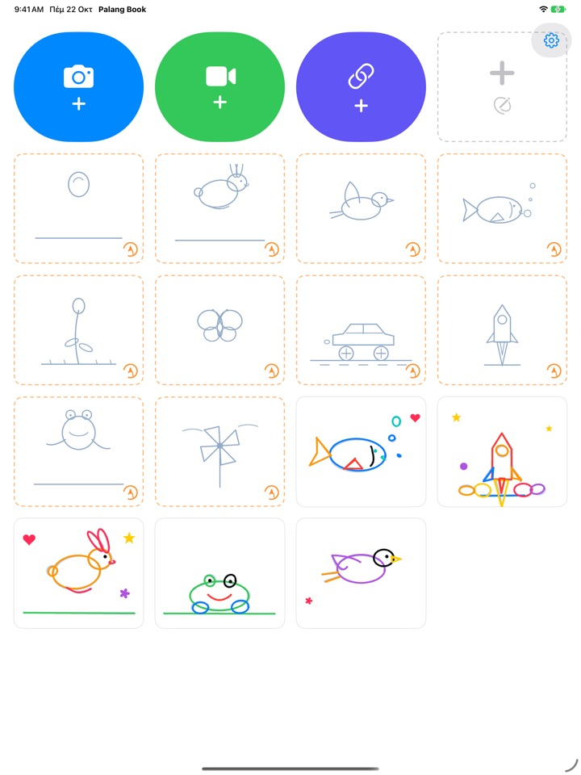

Ζωγράφισε τις γραμμές.
Δες τες να κινούνται.
Το παιδί ζωγραφίζει πάνω σε ένα αχνό περίγραμμα, μία σελίδα κάθε φορά. Πατήστε αναπαραγωγή: το περίγραμμα χάνεται και μένουν μόνο οι δικές του γραμμές, που κινούνται. Κάθε κουμπί είναι εικόνα, οπότε τα καταφέρνει μόνο του πριν μάθει να διαβάζει.
Για iPad. Τρία σετ περιγραμμάτων είναι δωρεάν.

Ζωγραφίστε μερικές σελίδες
Ζωγραφίστε κάτι και πατήστε το πορτοκαλί βέλος για την επόμενη σελίδα. Η προηγούμενη διαφαίνεται αχνά. Μετά από δύο τρεις σελίδες, πατήστε το μπλε κουμπί αναπαραγωγής.
Κρίμα μια ωραία ζωγραφιά να μένει ακίνητη, δεν είναι;
Κινούμενη εικόνα σημαίνει να ζωγραφίζεις σχεδόν την ίδια εικόνα ξανά και ξανά με μικρές αλλαγές, και μόνο του ένα παιδί δεν ξέρει από πού να ξεκινήσει. Το Palang Book βάζει από κάτω ένα αχνό περίγραμμα που έχει ήδη μέσα την κίνηση, οπότε αρκεί να ακολουθεί τη γραμμή. Μόλις πατήσει αναπαραγωγή, η ζωγραφιά του κινείται.
Ακολούθησε τη γραμμή, να και το κινούμενο σχέδιο
Μια μπάλα που αναπηδά, ένα λαγουδάκι που πηδά, ένα πουλί που πετά, ένα ψάρι που κολυμπά, ένα λουλούδι που ανθίζει, μια πεταλούδα, ένα αγωνιστικό αυτοκίνητο, ένας πύραυλος, ένας βάτραχος και ένας ανεμόμυλος. Κάθε σετ έχει περίπου 20 σελίδες με περιγράμματα.
Η προηγούμενη σελίδα διαφαίνεται αχνά για να βγαίνει εύκολα η επόμενη, και στην αναπαραγωγή το περίγραμμα χάνεται, ώστε να κινείται μόνο η ζωγραφιά του παιδιού.

Σφραγίδες και δέκα χρώματα
Με ένα άγγιγμα μπαίνουν καρδιές, κύκλοι, τετράγωνα, τρίγωνα, αστέρια, λουλούδια, αυτοκινητάκια και πουλάκια. Σφραγίδες και πινέλα έχουν από τρία μεγέθη, και τα χρώματα είναι δέκα.
Με τη γόμα και την αναίρεση τα λάθη διορθώνονται αμέσως. Ζωγραφίζει με το δάχτυλο ή με Apple Pencil.

Πάνω στα δικά σας βίντεο ή σε λευκό χαρτί
Φέρτε ένα βίντεο που τραβήξατε ή ένα από τις Φωτογραφίες και ζωγραφίστε κατευθείαν πάνω του. Αν κρύψετε το φόντο, παίζουν μόνο οι σκηνές με ζωγραφιά, η μία μετά την άλλη, σε λευκό χαρτί. Υπάρχει και λευκό flipbook χωρίς κανένα περίγραμμα.
Πατήστε το μικρόφωνο για να ηχογραφήσετε τη φωνή του παιδιού μαζί, και αποθηκεύστε το έργο ως βίντεο στις Φωτογραφίες για να το δει όλη η οικογένεια.

Ξεκινάτε σε τρία βήματα
- 1
Πατήστε μια κάρτα περιγράμματος
Οι κάρτες με πορτοκαλί διακεκομμένο περίγραμμα στην αρχική οθόνη είναι τα σετ περιγραμμάτων.
- 2
Ζωγραφίστε και γυρίστε σελίδα
Το πορτοκαλί βέλος πηγαίνει στην επόμενη σελίδα.
- 3
Πατήστε αναπαραγωγή
Πατήστε το μπλε κουμπί αναπαραγωγής και η ζωγραφιά κινείται.
Τι κάνουν τα κουμπιά
- Πορτοκαλί διακεκομμένη κάρτα
- Έναρξη σετ περιγραμμάτων
- Γκρι διακεκομμένη κάρτα
- Λευκό flipbook
- Μπλε κάμερα
- Ζωγραφική πάνω σε βίντεο που τραβάτε
- Πράσινο βίντεο
- Βίντεο από τις Φωτογραφίες
- Λουλακί σύνδεσμος
- Επικόλληση συνδέσμου προς αρχείο βίντεο
- Πορτοκαλί βέλος
- Επόμενη σελίδα
- Μπλε αναπαραγωγή
- Παίζει την κινούμενη εικόνα, πατήστε ξανά για διακοπή
- Καμπύλο βέλος
- Αναίρεση της τελευταίας γραμμής
- Κόκκινος κάδος
- Καθαρίζει όλη τη σελίδα (η αναίρεση τη φέρνει πίσω)
- Μικρόφωνο
- Ηχογράφηση φωνής όσο η κινούμενη εικόνα παίζει σε επανάληψη
- Εικονίδιο βίντεο
- Απόκρυψη φόντου βίντεο (ροζ ρίγες σημαίνει μόνο ζωγραφιές)
- Πράσινη αποθήκευση
- Αποθήκευση ως βίντεο στις Φωτογραφίες
Για να διαγράψετε ένα έργο, κρατήστε πατημένη την κάρτα του στην αρχική οθόνη. Μαζί του διαγράφονται οι ζωγραφιές, η ηχογράφηση και το βίντεο που προσθέσατε.
Πολλά για να δοκιμάσετε δωρεάν. Ισόβια πρόσβαση, αν σας αρέσει.
Δωρεάν
- 3 σετ περιγραμμάτων (μπάλα, λαγουδάκι, λουλούδι)
- Φύλαξη 3 έργων
- Προσθήκη 1 βίντεο
- Λευκά flipbook έως 10 σελίδες
- Ηχογράφηση φωνής έως 15 δευτερόλεπτα
- Σφραγίδες, χρώματα, πινέλα και αποθήκευση στις Φωτογραφίες
Ισόβια πρόσβαση
- Όλα τα σετ περιγραμμάτων, και όσα έρθουν στο μέλλον
- Χωρίς όρια σε έργα, σελίδες, βίντεο και χρόνο ηχογράφησης
- Χωρίς την κάρτα Palang Book στο τέλος των αποθηκευμένων βίντεο
Εφάπαξ αγορά, όχι συνδρομή. Με την Οικογενειακή κοινή χρήση λειτουργεί σε κάθε iPad της οικογένειας.
Τα βίντεο που αποθηκεύονται δωρεάν τελειώνουν με μια σύντομη κάρτα Palang Book. Αν χρησιμοποιούσατε το Palang Book πριν υπάρξει η Ισόβια πρόσβαση, τα έχετε ήδη όλα ξεκλείδωτα.
Ερωτήσεις
Πώς λειτουργούν τα περιγράμματα;
Οι ανοιχτογάλαζες γραμμές είναι το περίγραμμα. Το παιδί ζωγραφίζει από πάνω τους και, όταν πατήσετε αναπαραγωγή, το περίγραμμα χάνεται και κινούνται μόνο οι δικές του γραμμές. Με περίπου 20 σελίδες η κινούμενη εικόνα είναι έτοιμη.
Θέλω να παίξω και να αποθηκεύσω μόνο τη ζωγραφιά, χωρίς το βίντεο.
Σε ένα έργο με βίντεο, πατήστε το εικονίδιο βίντεο στη γραμμή εργαλείων πάνω, ώστε να γίνει ροζ με ρίγες. Τότε η αναπαραγωγή και η αποθήκευση δείχνουν μόνο τη ζωγραφιά σε λευκό φόντο. Παίζουν μόνο οι σκηνές με ζωγραφιά, οπότε λίγες ζωγραφιές πάνω σε ένα μεγάλο βίντεο δίνουν μια σύντομη κινούμενη εικόνα.
Πού πηγαίνει το έτοιμο βίντεο;
Πατήστε το πράσινο κουμπί αποθήκευσης στη δεξιά άκρη της γραμμής εργαλείων και ένα βίντεο mp4 αποθηκεύεται στις Φωτογραφίες. Την πρώτη φορά, επιτρέψτε την πρόσβαση στις φωτογραφίες.
Πώς προσθέτω φωνή;
Πατήστε το κουμπί του μικροφώνου για να ηχογραφήσετε όσο η κινούμενη εικόνα παίζει σε επανάληψη και πατήστε διακοπή για να τελειώσετε. Μια νέα ηχογράφηση αντικαθιστά την παλιά. Η φωνή μπαίνει στο βίντεο όταν το αποθηκεύσετε.
Ένας σύνδεσμος βίντεο δεν ανοίγει.
Ελέγξτε τη σύνδεση στο διαδίκτυο και βεβαιωθείτε ότι η διεύθυνση οδηγεί κατευθείαν σε αρχείο βίντεο (που τελειώνει σε .mp4 ή κάτι παρόμοιο). Σύνδεσμοι προς σελίδες ιστότοπων κοινοποίησης βίντεο δεν ανοίγουν. Χρησιμοποιήστε δικά σας βίντεο ή βίντεο ελεύθερα προς χρήση.
Η παλάμη μου αφήνει σημάδια.
Το καμπύλο βέλος σβήνει την τελευταία γραμμή και ο κόκκινος κάδος καθαρίζει όλη τη σελίδα (η αναίρεση τη φέρνει πίσω). Αν συμβαίνει συχνά, στείλτε μας email και θα σας βοηθήσουμε.
Γιατί υπάρχει μια πράξη πριν από την οθόνη αγοράς;
Για να μη φτάνουν τα παιδιά μόνα τους στην οθόνη αγοράς. Όταν ένα παιδί πατήσει κάτι κλειδωμένο, εμφανίζεται ένα μεγάλο λουκέτο με το μήνυμα «Δείξε το σε έναν μεγάλο», και η οθόνη αγοράς ανοίγει μόνο αφού ένας ενήλικας λύσει έναν πολλαπλασιασμό.
Πώς επαναφέρω την αγορά μου;
Πατήστε το γρανάζι πάνω δεξιά στην αρχική οθόνη, επιλέξτε Ισόβια πρόσβαση, απαντήστε στην ερώτηση για ενήλικες και πατήστε Επαναφορά αγορών. Πρέπει να είστε συνδεδεμένοι με τον ίδιο λογαριασμό Apple με τον οποίο κάνατε την αγορά.
Πώς στέλνω σχόλια από την εφαρμογή;
Πατήστε το γρανάζι στην αρχική οθόνη και επιλέξτε Αποστολή σχολίων. Μπορείτε να επισυνάψετε στιγμιότυπο οθόνης και να αφήσετε όνομα και email αν θέλετε απάντηση. Παρακαλούμε τα σχόλια να τα στέλνει ένας γονέας.
Συλλέγετε στοιχεία για το παιδί μου;
Όχι. Το Palang Book δεν συλλέγει κανένα προσωπικό στοιχείο, και οι ζωγραφιές και οι ηχογραφήσεις μένουν στο iPad σας. Δείτε την Πολιτική απορρήτου για λεπτομέρειες.
Ερωτήσεις ή προβλήματα; Γράψτε μας στο mizzking75@gmail.com. Συνήθως απαντάμε μέσα σε 2 με 3 ημέρες.